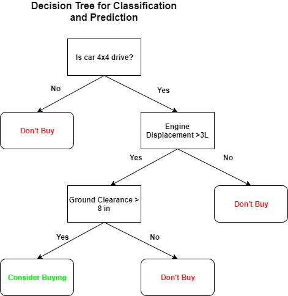
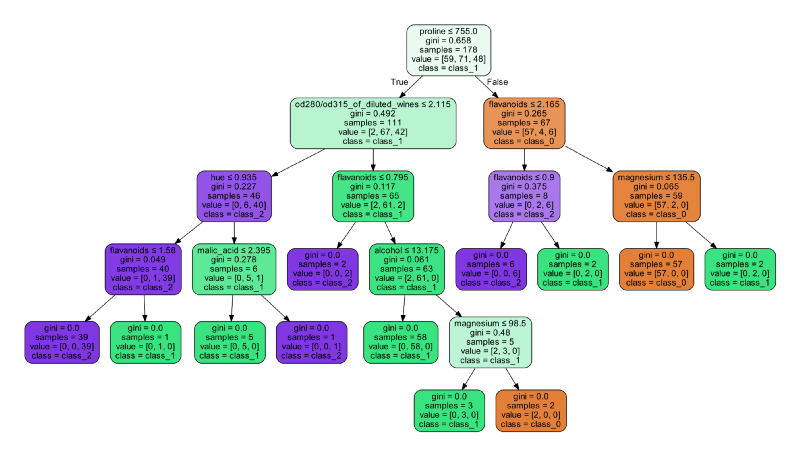

Klasifikasi Data Wine Menggunakan Decision Tree¶
Sejenak Soal Decision Tree¶
Decision tree adalah salah satu metode klasifikasi yang paling populer, karena mudah untuk diinterpretasi oleh manusia. Decision tree adalah model prediksi menggunakan struktur pohon atau struktur berhirarki. Konsep dari pohon keputusan adalah mengubah data menjadi decision tree dan aturan-aturan keputusan. Manfaat utama dari penggunaan decision tree adalah kemampuannya untuk mem-break down proses pengambilan keputusan yang kompleks menjadi lebih simple, sehingga pengambil keputusan akan lebih menginterpretasikan solusi dari permasalahan.
Untuk menggambarkan hal ini, anggaplah Anda ingin membeli mobil baru untuk mengendarai jalan tanah acak ke hutan acak. Anda memiliki kumpulan data mobil yang berbeda dengan tiga fitur: Jenis Drive Mobil (Kategorikal), Perpindahan (Numerik) dan Jarak Bebas (Numerik). Contoh pohon keputusan yang dipelajari untuk membantu Anda mengambil keputusan ada di bawah:

Implementasi¶
Sekarang kita telah melihat bagaimana Decision Tree bekerja, Pada kali ini saya akan memberikan implementasi menggunakan salah satu data yang telah include di Sklearn yaitu WIne dataset dan mengimplementasikan pohon keputusan sederhana untuk klasifikasi (13 fitur / variabel dengan 3 kelas), serta mevisualisasikan Decision Tree dengan Graphviz.
from sklearn.datasets import *
from sklearn import tree
import graphviz
wine = load_wine()
clf = tree.DecisionTreeClassifier() # init the tree
clf = clf.fit(wine.data, wine.target) # train the tree
# export the learned decision tree
dot_data = tree.export_graphviz(clf, out_file=None,
feature_names=wine.feature_names,
class_names=wine.target_names,
filled=True, rounded=True,
special_characters=True)
graph = graphviz.Source(dot_data)
graph.render("wine") # tree saved to wine.pdf
Dari Decision Tree yang dipelajari, kita dapat melihat bahwa fitur prolin (prolin dalam wine) adalah node akar dengan nilai Gini tertinggi 0,658, dan ini berarti ketiga kelas wine memiliki Mean sebagai pemisahan dasarnya. Ini juga berarti bahwa pada prinsipnya, jika kami hanya menggunakan satu fitur dalam model prediktif, konten prolin akan memungkinkan kami untuk memprediksi dengan benar hingga maksimum 1-0,688 = 0,342 = 34,2% dari waktu, dengan asumsi bahwa decision tree memprediksi dengan sempurna. Kemudian, dari akar kita melihat bahwa kelas terpecah lebih jauh dengan fitur od280 / od315_of_dilute_wines dan fitur flavinoid. Kita juga dapat melihat bahwa sebagian besar wine class_1 (81,7%) memiliki kandungan alkohol ≤ 13.175 dan konten flavinoid ≤ 0,795. Juga, ingat bahwa ada 13 fitur dalam dataset , tetapi pohon keputusan hanya mengambil subset dari 7 fitur untuk klasifikasi.
Kita dapat menggunakan informasi ini untuk memilih fitur / variabel mana dalam dataset umum yang penting (dalam kasus di mana mungkin ada fitur yang tidak berguna dan menggangu) untuk model yang lebih maju. Pohon keputusan yang dipelajari dapat digunakan untuk memprediksi data menggunakan pemanggilan fungsi sederhana pada deretan data input. Pohon regresi untuk memprediksi nilai output numerik dari fitur input dapat dibuat dengan sangat mudah juga.